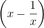
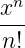
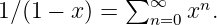

Observe that trigonometric and other elementary functions are typeset properly, even to the extent of providing a thin space if followed by a single letter argument:
| exp(i𝜃) = cos 𝜃 + i sin 𝜃, sinh(log x) = . |
With sub- and super-scripts placed properly on more complicated functions,
| lim q→∞∥f(x)∥q |
and large operators, such as integrals and
| ex | = ∑ n=0∞ where n! = ∏ i=1ni, | ||
| Uα | = ⋂ αUα. |
In inline mathematics the scripts are correctly placed to the side in order to conserve vertical space, as in 